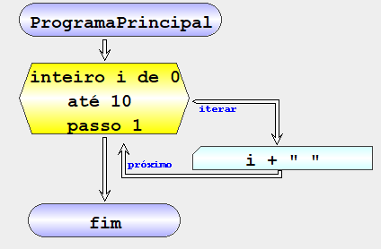

Algoritmo que imprime na consola os números inteiros entre 0 e 10 por ordem crescente
| Fluxograma | pseudocodigo |
|---|---|
|  | inicio ProgramaPrincipal iterar inteiro n de 0 até 10 passo 1 escrever n + " " fim iterar fim ProgramaPrincipal |

NOTA: Não existe nenhuma variável definida no final do ciclo porque o iterador i é interno ao ciclo.